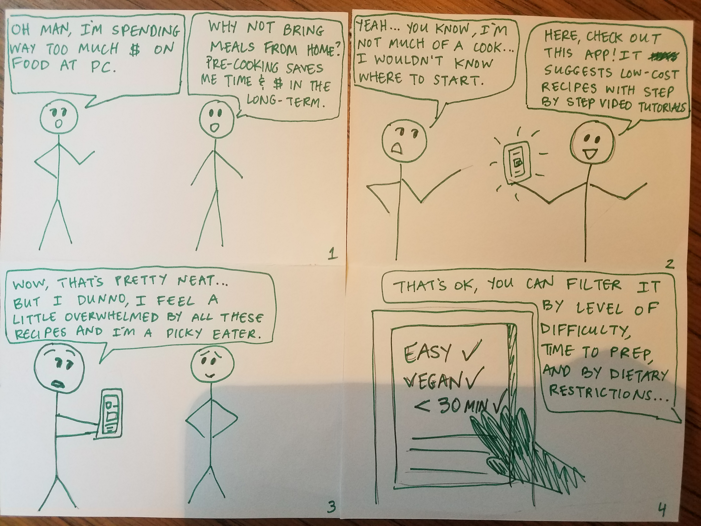
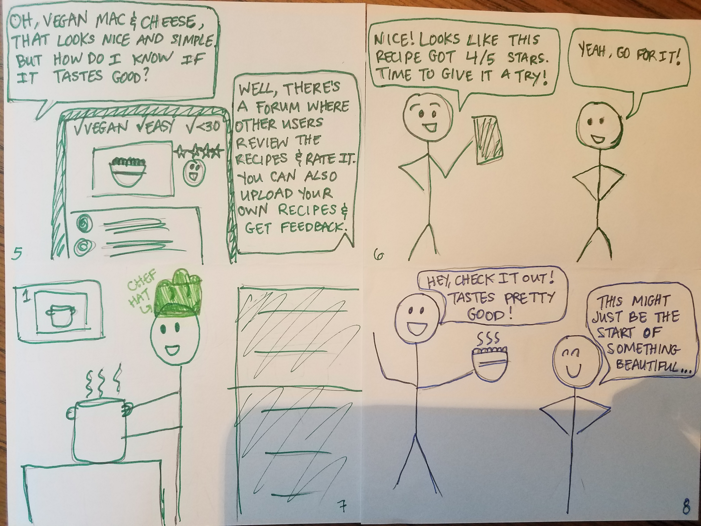
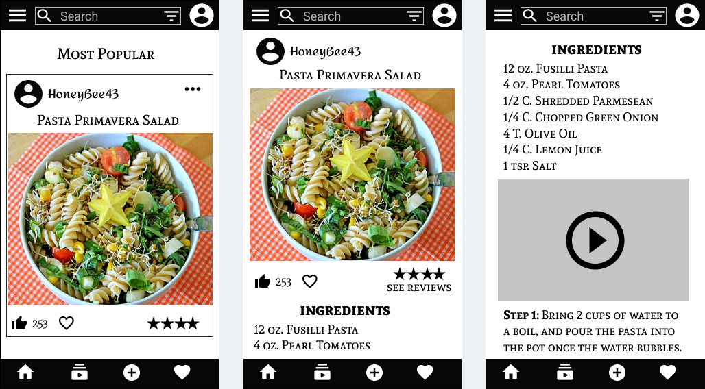
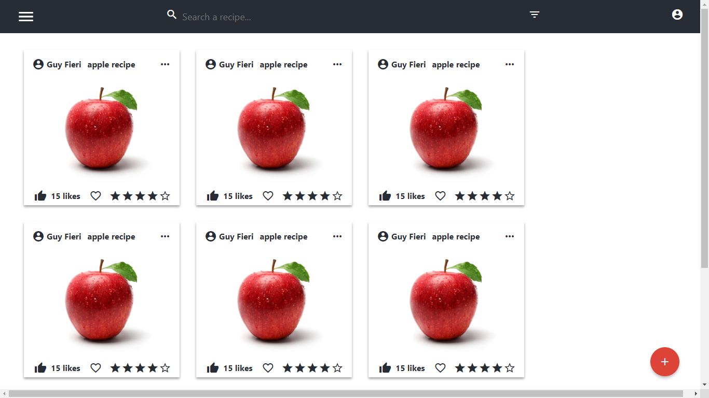
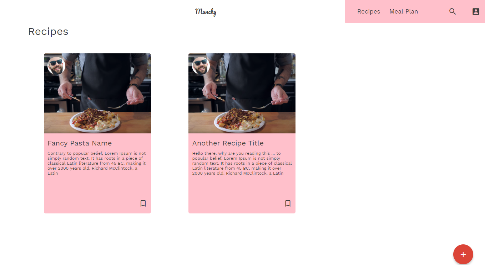
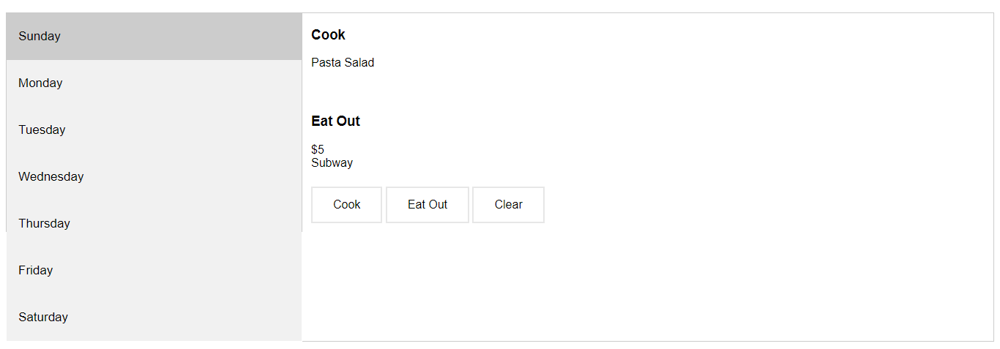
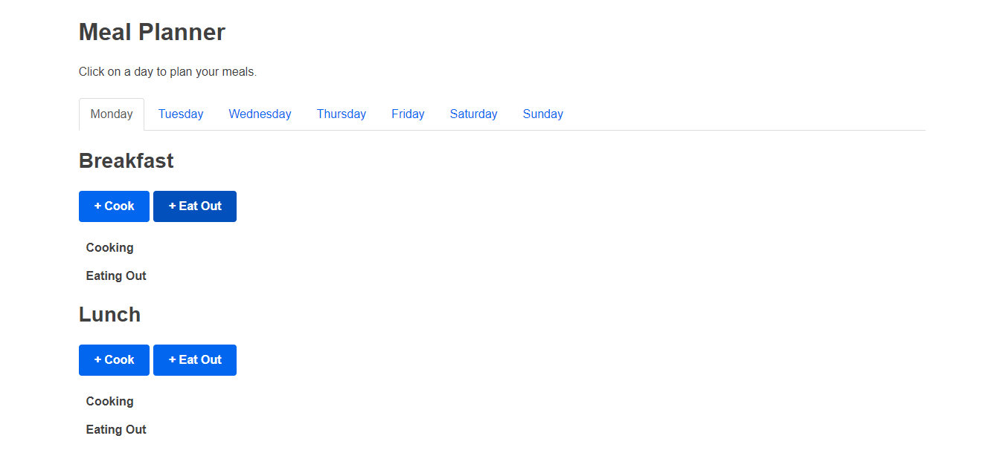
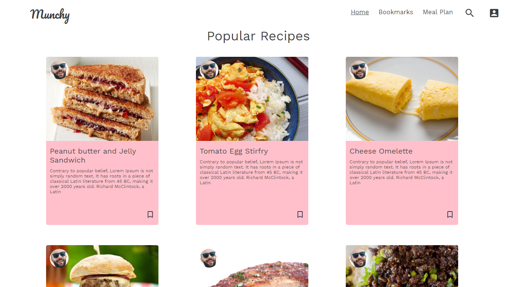
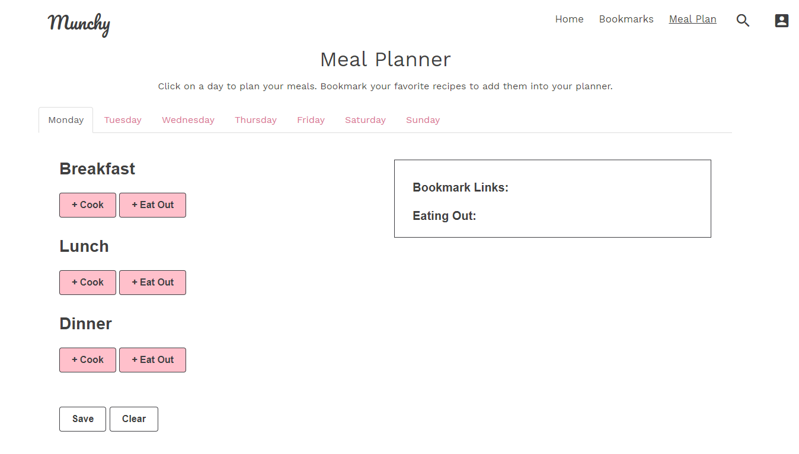

As a group of UCSD students, we were interested in learning more about the eating and cooking habits of students on campus. Why do some prefer to bring food from home, while others prefer to eat out at the venues on campus? What are the advantages or disadvantages of each? What alternatives exist on campus for eating healthy on a budget?
After interviewing a variety of students from different parts of campus, we gained some insights about these questions.
Upon reflecting on the different needs and experiences of these students, we developed a problem statement based on our insights.
Problem Statement: As a student, it’s difficult to find a balance between eating out and preparing meals at home. While eating out might save time in the short term, it can become quite expensive in the long term, whereas cooking from home can help lower eating expenses and gives students more control over the nutritional value of their meals.
Next, we used storyboarding to brainstorm different potential solutions that would address our users’ needs. The example below addresses the problem of eating-out expenses by offering a better resource to help students learn new recipes and encourage them to cook from home.
 
We then created paper prototypes inspired by our storyboard to help visualize the user interactions that would be involved in our app. We imagined a social platform similar to instagram that would appeal to a student audience. Users could upload recipes with steps and videos and share them with friends or followers. They could also look up recipes according to different meal categories, preparation time, and dietary restrictions.
Below are wireframes for the three main pages of our app in its initially imagined phase. The first screen on the left would be the home page, which would have an infinite-scroll feed of recipes uploaded by other users. The second screen in the middle shows what you would see if you clicked on one of the recipes. The third screen on the right shows a scrolled-down view of a recipe page that would include ingredients and videos.

After creating the wireframes, we built a skeleton website that showed its main functionalities - viewing, liking, and uploading recipes. The website was built using React, a JavaScript library.
We decided to simplify the coding aspect of our project by stripping the React components and replacing them with HTML and Javascript code. This allowed us to focus more on implementing the design and key functionalities of our app. We also simplified the recipe cards on the homepage so they would look less cluttered and allow users to easily bookmark recipes.
After receiving feedback on our design, we realized that our app wasn't really bringing anything new to the table in the sense that it was too similar to other recipe apps, and wasn't helping our users gain any new insights. At this point, we had to go back to the drawing board and come up with a unique functionality for our app. We revisited our Problem Statement, and looked at existing solutions for inspiration.
Finally, we came up with the idea of a Meal Planning feature. This feature would allow users to plan their meals for the week using their bookmarked recipes, and keep track of how often they ate out. In this way, by planning and reviewing their meals for the week, users could gain insights about their cooking and eating habits.
We changed the layout of our meal planner so the days were separated by horizontal tabs to give it more of a calendar-like view. We also separated each day into Breakfast, Lunch, and Dinner so users could plan to either cook or eat out for all three meals.
For our user testing, we were interested in the user flow of bookmarking recipes and adding them to the meal planner. We found that some users attempted to plan a meal directly from the recipe page, instead of navigating to the meal planner tab from the homepage. We also found that within the meal planner, some users were confused about the focus of the app - whether it was supposed to encourage users to eat healthier or save money (since we prompted users to enter a price for eating-out entries). We decided to remove the cost input in order to narrow the scope of our application.
Furthermore, another user pointed out that they were unsure whether their input was saved in the meal planner when they clicked the “submit” button at the bottom of the page. We decided to change the button to “save” instead, and added a summary box in the right hand column so users have a visual cue that their information was saved.
Based on the feedback we gathered from our user testing, we came up with a final design for our app. We also reflected on future revisions and improvements we could make- such as making the meal planning feature accessible directly from the recipe pages, and possibly implementing a full calendar view so users could plan for multiple weeks at a time.
 